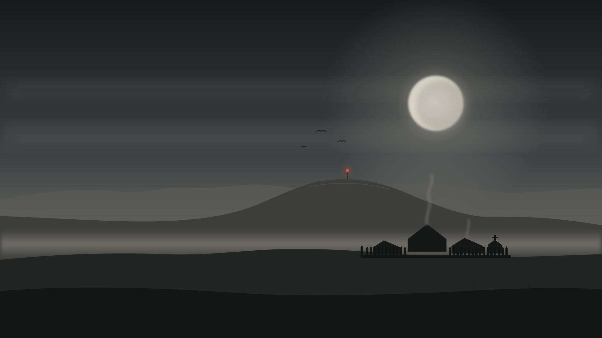

Weighty melee
Real-time, third-person combat with spear, sword, axe, seax and shield. The dead only stop for a head strike, a severed limb or fire.

The Failing Light
Western Britain, AD 548. Twelve winters ago the sun went grey. The harvests failed, Arthur fell at Camlann, and the ground stopped holding its dead. You are Owain, a squire who inherits a dying knight's manor and must keep its people alive.
The game opens on Brother Cadoc's Chronicle. Iron-gall ink and red lead come alive on the page: the grey sun, the failed harvests, Camlann, and the dead that would not stay in the ground.
"Twelve winters before this book, the sun put on ashes. It gave its light without brightness, like the moon, the whole year through."Brother Cadoc, the Chronicle
Work in progress. 45 seconds.
KnightZ: The Failing Light is a real-time, third-person, melee-focused action adventure. You fight the Restless in the dark of winter and brigands on the summer roads, while the manor behind you lives, works, starves or grows by the choices you make.
Six commitments that every system, asset and scene is measured against.
Real-time, third-person combat with spear, sword, axe, seax and shield. The dead only stop for a head strike, a severed limb or fire.
Fields, coppice, forge, granary and palisade are worked by simulated people you can see. Rations, labour and building order are your calls through the steward.
History is written by the survivors. The book records your seasons in the framing you choose: Humble, Proud, Pious or Plain. What you leave out is forgotten.
The world runs on one real-time clock. An in-game day is an hour. Winter nights are long, and every winter ends with the Winter Night assault on the manor.
Viroconium, the Wrekin, Wenlock Edge, the Long Mynd. Period flora, crops, buildings and material culture only. No rabbits, no sycamores, no white-faced sheep.
Burn the dead or bury them. Take in refugees or close the gate. How you treat the Uld of the high country decides which of several endings you reach.
Three in-game days make a season. Day and night lengths follow the dust-veil years, with real sunrise and sunset on the clock.
Thaw floods, mud on every track, the fields sown. The winter's dead must be burned or buried.
Hazy light, high bracken, dry roads. Brigands of the Clee work the routes between regions.
The harvest window. Every pair of hands in the fields, and every sheaf counted against the winter.
Pewter skies and frozen fords. The dead come in force, and the last night of winter is the Winter Night.
Each region is a 1.5 to 4 km window built at close to 1:1 scale around the places that matter, joined by real roads and border crossings. Every window has its own 16-bit heightmap and terrain masks.
More than twenty named characters, every one built from a written specification for period costume, body and face. Portraits are concept art; the built heads are in the gallery below.
Squire to Sir Bedwyr, 22. Orphaned in the famine, few words, dry humour. Inherits the manor and everything it owes.
Companion of Arthur from before Badon. One-handed, funny, tired and kind. The game begins at his deathbed.
Trained at Llancarfan. Formal, Latin, furious when upset. His book decides what the future believes about you.
Gruff and proud of his forge. Coughs and hides it. Afraid of dying before he passes on the fire.
Seventy-four, half blind, the last of a burned house of readers. Reads aloud to nobody. Mad in some directions, sane in others.
In Bedwyr's war band since he was fifteen. Short sentences, gallows humour, a chipped tooth and a patched mail shirt.
Twenty years of tally sticks. Does sums in his head faster than Cadoc can write. Blunt, never cruel.
An old people of the hills, heavy-boned and strong. The manor fears them. The Saxons call them the Grendel-kin.
The dead who will not stay down. The Old Dead walk slowly and in numbers. The Recent run.
Every asset follows a documented, script-driven pipeline from Blender to Unreal Engine. Updated with each dev log entry.
A new entry every day on what was built, what broke and what comes next.
Loading entries...
Renders from Blender and concept art. Everything shown is in development.
The build order puts the hardest systems first: the living manor and the Winter Night are proven in gray box before final art.
Screenplay, character bible, world plan, terrain, and a repeatable character pipeline proven in UE5.
Owain, Bedwyr, Cadoc, Iddon, Tysilio, Cynan, Custennin and Rhiannon. Weapons and tools done; period clothing next.
Severn Vale terrain, the manor blocked out, simulation core with gray-box workers on six worksites.
Hall, longhouses, palisade, build stages, forge and fields from modular kits.
The prologue and Chapter 1 playable end to end, then the first Winter Night.